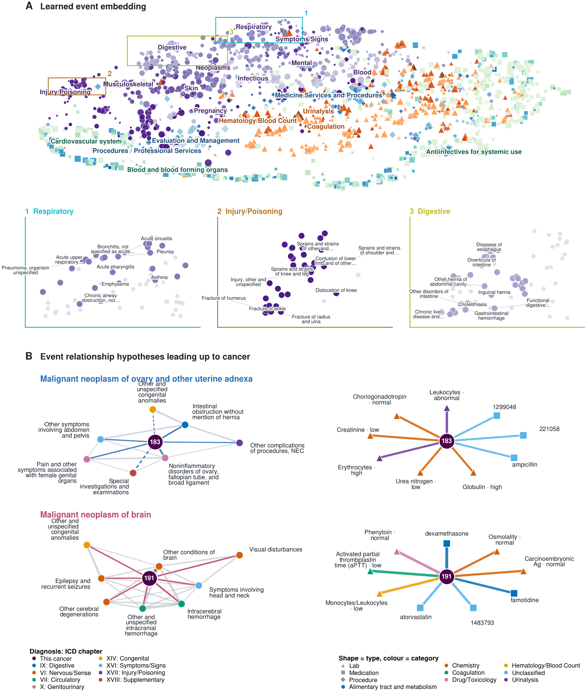
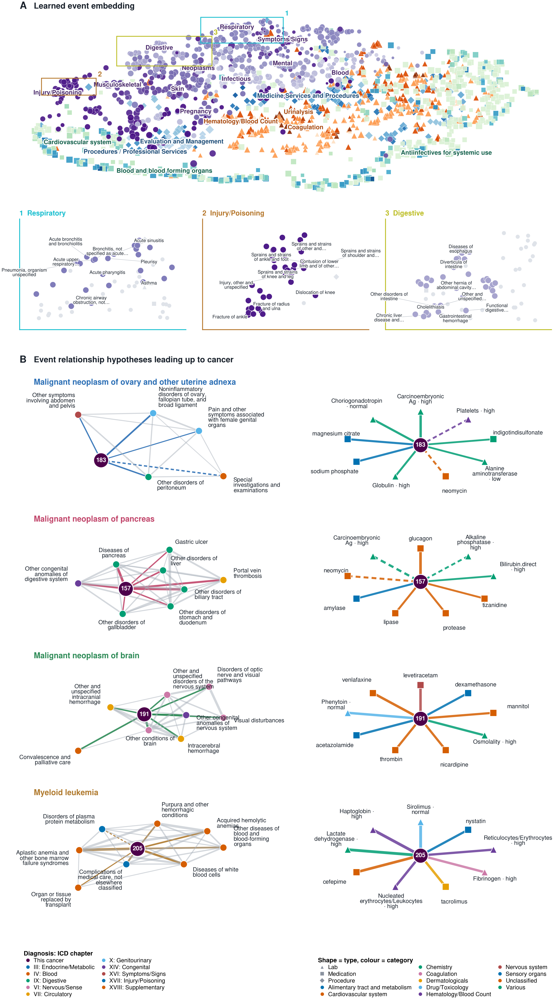
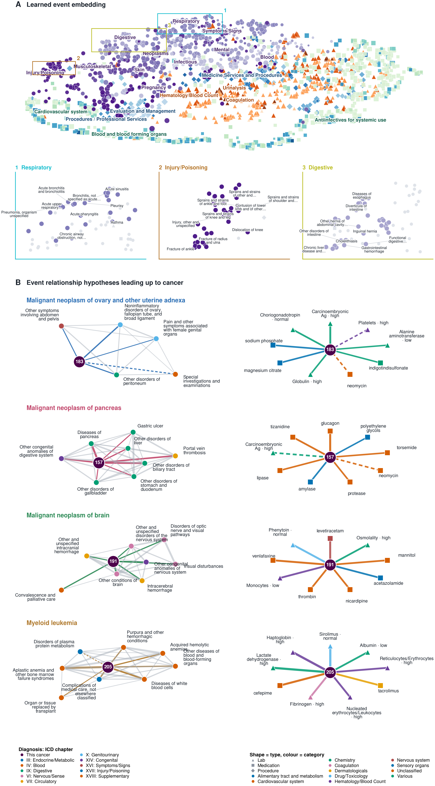

Patients with a cancer diagnosis on record. Every sequence stops at the first cancer, so all context here is pre-diagnostic.
Event dependency leading up to a first cancer

Panel A is the learned event embedding, coloured by clinical category across four vocabularies and sized by frequency. 35 of 37 categories reach 15-NN purity above three times chance in the representation, with no ontology given to the model; three magnified regions show structure below chapter level — acute versus chronic respiratory disease, sprains versus fractures, upper gastrointestinal versus hernia versus hepatobiliary. Panel B holds the selected cancers, each with a diagnosis neighbourhood (left, including edges among the predecessors) and a cross-modal hub (right). PDF · SVG
{kind=link}
Cancers meeting the evidence gates
| Cancer | expected first diagnoses | diagnosis + cross-modal | strongest predecessors |
|---|---|---|---|
| Malignant neoplasm of ovary and other uterine adnexa | 24 | 7 + 9 | Leukocytes [#/area] in Urine sediment by Mic, Choriogonadotropin [Units/volume] in Serum o, Creatinine [Mass/volume] in Serum or Plasma , Erythrocytes [#/volume] in Urine sediment by |
| Malignant neoplasm of brain | 22 | 8 + 9 | dexamethasone, Other conditions of brain, Phenytoin [Mass/volume] in Serum or Plasma -, Deprecated Activated partial thrombplastin t |
Patients with no cancer on record. The model's anticipation of cancer in people who never receive the diagnosis.
Event dependency leading up to a first cancer

Panel A is the learned event embedding, coloured by clinical category across four vocabularies and sized by frequency. 35 of 37 categories reach 15-NN purity above three times chance in the representation, with no ontology given to the model; three magnified regions show structure below chapter level — acute versus chronic respiratory disease, sprains versus fractures, upper gastrointestinal versus hernia versus hepatobiliary. Panel B holds the selected cancers, each with a diagnosis neighbourhood (left, including edges among the predecessors) and a cross-modal hub (right). PDF · SVG
{kind=link}
Cancers meeting the evidence gates
| Cancer | expected first diagnoses | diagnosis + cross-modal | strongest predecessors |
|---|---|---|---|
| Malignant neoplasm of ovary and other uterine adnexa | 400 | 5 + 9 | Carcinoembryonic Ag [Mass/volume] in Serum o, Choriogonadotropin [Units/volume] in Serum o, magnesium citrate, sodium phosphate |
| Malignant neoplasm of pancreas | 141 | 8 + 9 | Diseases of pancreas, Other disorders of biliary tract, glucagon, Portal vein thrombosis |
| Malignant neoplasm of brain | 368 | 8 + 9 | Other conditions of brain, levetiracetam, venlafaxine, Phenytoin [Mass/volume] in Serum or Plasma - |
| Myeloid leukemia | 141 | 8 + 9 | Aplastic anemia and other bone marrow failur, Sirolimus [Mass/volume] in Blood - normal, Haptoglobin [Mass/volume] in Serum or Plasma, Lactate dehydrogenase [Enzymatic activity/vo |
All patients. The population reference, and the best measured of the three.
Event dependency leading up to a first cancer

Panel A is the learned event embedding, coloured by clinical category across four vocabularies and sized by frequency. 35 of 37 categories reach 15-NN purity above three times chance in the representation, with no ontology given to the model; three magnified regions show structure below chapter level — acute versus chronic respiratory disease, sprains versus fractures, upper gastrointestinal versus hernia versus hepatobiliary. Panel B holds the selected cancers, each with a diagnosis neighbourhood (left, including edges among the predecessors) and a cross-modal hub (right). PDF · SVG
{kind=link}
Cancers meeting the evidence gates
| Cancer | expected first diagnoses | diagnosis + cross-modal | strongest predecessors |
|---|---|---|---|
| Malignant neoplasm of ovary and other uterine adnexa | 424 | 5 + 9 | Carcinoembryonic Ag [Mass/volume] in Serum o, Choriogonadotropin [Units/volume] in Serum o, sodium phosphate, magnesium citrate |
| Malignant neoplasm of pancreas | 150 | 8 + 9 | Diseases of pancreas, Other disorders of biliary tract, glucagon, Portal vein thrombosis |
| Malignant neoplasm of brain | 390 | 8 + 9 | Other conditions of brain, levetiracetam, Phenytoin [Mass/volume] in Serum or Plasma -, venlafaxine |
| Myeloid leukemia | 154 | 8 + 9 | Sirolimus [Mass/volume] in Blood - normal, Aplastic anemia and other bone marrow failur, Haptoglobin [Mass/volume] in Serum or Plasma, Lactate dehydrogenase [Enzymatic activity/vo |
- Two gates decide what is drawn. A lower confidence bound on adjusted cPMI, which removes rare codes whose association explodes on almost no evidence, and a specificity margin, which removes events sitting close to every cancer. Without the second gate the panels fill with generic order-set labs and pan-cancer drugs.
- The three cohorts share one geometry. The cancer and non-cancer maps agree with each other more than either agrees with a noise-perturbed copy of itself, so apparent cohort differences are measurement precision, not biology. No individual edge survives a cohort contrast at z ≥ 2 after multiplicity correction.
- Ordering is a confound. A lab predicts a cancer partly because it was ordered. Result states are mostly indistinguishable: only 2 of 32 analytes differ significantly between an abnormal and a normal result.
- Associations are descriptive. Not causal, not temporal beyond the next visit, and never patient-level. Counts are patient-weighted, one unit per patient spread over their sites.